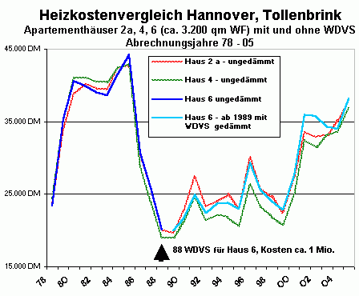

Weitere Datenübertragung Ihres Webseitenbesuchs an Google durch ein Opt-Out-Cookie stoppen - Klick!
Stop transferring your visit data to Google by a Opt-Out-Cookie - click!: Stop Google AnalyticsCookie Info.Datenschutzerklärung
Did you refurbish
your old building? What happens? The audacious work of renovation, reconstruction, rehabilitation or modernization
failed a little bit? Nearly all your money and hope are lost?
Did you insulate your old house by thermal insulation? Your house is locked hermetically and airtight now? Mold fungus at the
walls and in the roof? All is poisoned with insecticide, fungicide, algicide, pesticide, synthetic softener, solvent and fire protection?
From the ceiling the water drips and the dry rot grows? Your children suffer of dermatitis? Do all have asthma and cough? Are finally your eyes tearing and your thumbs completely blue?
You always found the perfect expert in your neighbourhood and the fabulous consultant in the InterNet Forums. The best and cheapest
offers of the market too. Did your architect get your money? But the real planning is made by his
industrial friends and producers of building materials. Free for him but too expensive for you. This isn't rare. At the rescue of the cultural heritage too. Do you know this? I
congratulate! But: Perhaps your work may succeed better, healthier and even more cheaply? Do you know how?
You are welcome! Thank you very much for your visit. This web site is made just for you. Perhaps it is not too late?
Here you will find free, independent, critical and controversial information regarding your house. Topics: The repair
of old buildings and the restoration and preservation of historic monuments. Mostly in German language. Some pages are
in other languages (English, Russian, Spanish,
... Look at the flags). Now this page in your language. Thanks to machine translation ;-)
Please: Help me to improve the text. Send me corrective suggestions. This will help all visitors. Thank you !
(Here is the english version to compare)
But why text in your language? Because old houses, buildings and historic monuments must be restored also in your
country. Many technical and economical problems and other questions we have in common. The errors too. With the same
disasters for the historic buildings. The international building industry and your experts don't sleep. This also costs
your money. Do you want to see examples? Click the pictures for further information:
Is this information controversial and unusual? However, the information corresponds to the old one
tradition and art of the skilled crafts. Many years experience at the restoration work are the basis: Historic monuments
and ancient buildings from the farmhouse to castles, manor houses, mansions and ecclesiastical buildings like
churches and monasteries. Also my father had been architect and did this conservation work since 1958
until his dead 1979, when I started. I could learn much from him. After my studies I had been a scientific
volunteer in the office for care of monuments in Munich for two years.
The best specialists of the industry, the famous experts from the handicraft, the very trustworthy engineers, the
always dark black dressed architects and also your so friendly friends nearby will have mostly another opinion.
Perhaps they will give better advice. But you must decide by yourself whether my information for you is meaningful
and useful. However, you also can follow your wise experts on the broad one Street of the success (only for the experts?).
Perhaps you can find here no answer to your questions. Alternative: There are over 1.500 pages in German language:
Restoration. Preservation. Conservation. Technical and historical investigation and survey of buildings. Building
materials for old houses: Brick, lime, mortar, plaster, brick-work, wooden framework, concrete, painting from synthetic
resin and potassium silicate. Restoration, consolidation and strengthening of sandy and corroded natural stones.
Problems with the restoration and renewal of the building and its parts from the foundation to the roof. Economy and
financing. Deceit and corruption at the industry and the planning of houses and restorations. Last, but not least - an adventure: The climatic change - what's true?
Here you can find the way:
- Ascending dampness and rising damp. What will not work against dampness and
wetness in the masonry of walls and brick-work. Failures of the struggle against damp and salt attack in the cellar and
in the foundation, at the front and in the layers of plaster. Ineffective, destructive and expensive masonry drying methods:
Horizontal isolation by injection in drilled holes (borehole injection), drilled metal plates or foils after masonry
cutting, hermetic mortars and paints with synthetic resins or very funny electronic dewatering by electro-osmosis.
Methods, which do not work and make all worse: The largest business for the swindlers not only in Germany. Also
in English language: Rising
damp does not exist
No capillary ascending and rising dampness in the brick-work and masonry. Not in
the laboratory, not at the building in the water, not at all at the brick-work in the harbour. But why?
Because the capillary transport is impossible from the material with small pores (brick and natural stone) into the material
with large pores (mortars)!
The capillary transport in the pores of the stones and the mortar joints will not defeat the gravity more than
10 to 20 centimeter. Only the water-waves and the salty water of the high tide make the walls wet! So it is in good old and
modern Germany. Should it be possible in your beautiful and mysterious country? Test it in your bathroom, if you don't
want to believe this! Don't believe in bad guys and silly theories. Don't believe me too!
Neither a colored silk tie and a wonderful luxury class car nor a colored web page can improve bad advice ! And what will
you believe? Hoax and witch work? Enlightenment must be !
- Mold fungus and black mold. The usual result of the modern building methods: Wrong
thermal insulation, hermetic airtight rooms and heating of the room air. So your most important food is abused: The
air to breathe. Also in English: How to get
rid with mold attack.
- Climatic change - Global warming and cooling: Scientific
facts and
cruel green eco-horror. The decrease of carbon dioxide as a perfidious weapon against nations and people worldwide.
- The fraud with the thermal insulation. Wrong energy saving, terrorist
ecological laws and corrupted governmental regulations force you, to destroy your own house and your family or
tenant: With industrial and ecological materials for the wrong thermal insulation. Expensive packed air in foam and
fibers, artificial and ceramic stones with pores, wool, cotton, hemp, cellulose, recycled newspapers, sea-grass...
costs your money. However, these materials will certainly moisture up soon. Then follows the algae. The poisonous black
mold fungus also. And the white mildew, the spiders, cockroach, silver fish, gnawing beetles and termites,
the worms, the mice, the rats, the weasel and the woodpecker. Maybe asthma, headache, dermatitis and cancer too.
Algae on the surface of an External Thermal Insulation Composite System.
Be cautious against the dangerous technology of the passive house! German junk science!
There are also today in Germany cheats! The modern science can be very corrupt.
Diagram: Consumed heat energy in rooms. The walls have different construction. The R-value / k-value (heat
conduction) without sense and effect: Research of the Fraunhofer-Institute 1983. X-axis: k-value of the wall construction.
Y-axis: Consumed Watt of heat energy in the measured time. Purple and red: Thermal insulation with 23 and 10 centimeter
polystyrene. Green: Only brick.
Original text under the picture: "A thermal imaging of the front proves large losses of the
heat. Measurement at temperature outside 10oC, still wind and unknown temperature in the room. A cause
for the visible loss of the heat is that the window is implemented in solid masonry." From the Danish
newspaper Byg Tek (Building Technology) 25.10.04 of journalist Michael Rughede.
That is only advertisement of the international chemical industry and the manufacturers of
insulating material. The producers can be connected financially with some engineers, architects, craftsmen,
scientists, officials of the state, politicians and media. They want to sell airtight houses and maximum thermal
insulation to you. No benefit for the house owner. Maximum cash for the other side.
The picture shows only the heat radiation from the solid wall surface 12 o'clock. Sun warmth only! The southern
wall radiates much and red. The western wall radiates little and blue / green cold. More Enlightenment !
- The Room Envelope Heating System - Properly or Risky Heating (in english) - Heated air or warm walls? The usual convector heater: Hot air is heating.
Head hot and feet cold.
In your room: A dusty typhoon or zero wind? Much or little consumption of energy? Asthmatic children, flu in each
winter by wrong heating? Condensate and mold fungus at the cold walls? Or gentle heat radiation from the room surfaces?
The energy saving with thermal radiation heating needs little technology. The result: Always dry constructions and
houses. Healthy, cool and pure room air. Radiant warmth is heating by infrared
thermal radiation.
The room air is cooler than the room surface. No airtight hermetic isolation of the rooms. No senseless thermal
insulation with soaked building materials. No condensate into cold surfaces. Many facts about the disadvantages of
heating pipes in the floor and behind the plaster in the walls. Also: The better alternatives. Here one of many
examples of the cheap and well preserving heating with radiant heat:
Veitshoechheim Palace with thermal radiation heating (english version)
- Poisoned wood protection and not poisoned natural wood
preservation. The struggle against destructive fungi, dry rot and insects (wood worm, termites, gnawing beetle ...).
The durable care of weathered wooden constructions outside. Terraces, balconies, landing stages,
bridges: All in good shape now. No poison, but natural know-how.
Electromagnetic waves and glass Diagram of Professor Dr. Claus Meier: Window pane glass
is not permeable for the wavelengths of the ultraviolet radiation (< 0.3 µm) and infrared radiation (infrared
radiant heat ≶ 2.7 µm). Only the wavelengths of light can penetrate glass. The sunshine comes in the room. There is
fire protection from fire resistant glass. The light of the fire is visible behind glass. But the heat of the fire can not
penetrate the glass pane. The materials will absorb the electromagnetic waves of the light. Then the materials will emit the light
energy in the infrared wavelength. So: Light can heat your room.
X-axis: Wavelength and transparency of the window panes. Y-axis: Intensity of the radiation.
The heat in materials is transported predominantly by radiant heat (phonons, migration of the electrons). Two window
panes filter more free solar energy than one. Double glazed windows will force condensation in the wall. Sealed windows
increase the dampness in the room air. Thus the heating consumes more energy. Therefore modern windows will increase
energy consumption and mold attack. Enlightenment !
- My english lecture in a RILEM seminar 'Characterisation of old mortars with respect to their repair - Historic
Mortars - Characteristics and Tests', University of Paisley, Scotland, May 1999:'Traditional Craftsmanship in Modern Mortars - Does it Work in Practice?'
(English) My sketches of the excursion to Glasgow, castles, historic kilns and other places.
The abbey in Waldsassen
The front we repaired with pure hydrated (caustic, not hydraulic !) lime mortar and lime-casein-wash. Cheaper and
better than destroying methods based on cement, synthetics or soluble glass / potassium (potash) silicates.
- Decay of concrete and cement.Rusty corroded and decayed reinforced concrete. The disaster
with the self destroying constructions and building materials of the modern architecture. Wrong and correct repair of
rusty constructions of reinforced concrete.
- The author / Reference - my biography. References to some projects since 1979 (> 400).
Official reference testimonials. Note: Click on my picture. Download a 2,8MBwmv sample.
Konrad Fischer playing cello in the Christmas Oratory from J. S. Bach. Conducted by Marius Popp 2005.
- Building materials - The problems of the modern structural
systems. They can damage the old house and its inhabitants. There are alternatives.
Diagram: 'The experiment of Lichtenfels': Increase of the temperature under different building
materials / insulating materials (4 centimeter) after 10 minutes of irradiation with a red light lamp. The materials
from above: Mineral wool, polystyrene, foamed glass, clay brick, wood fiber, gypsum cardboard, pine wood. X-axis: Time
of the irradiation. Y-axis: Temperature in ° Celsius.
Note: The Rth-values/U-values (= "U") are not common with the changes of the temperature and the practical effect
of the thermal insulation. The crazy joke: The
experts of R-values define their results without any regard of the time and amount of heating energy in the proof
before they start measuring. Heavy materials suck up and store huge amounts of energy. Therefore they can lose much more
energy than air filled insulation. Some experts neglect the free daily energy radiation outside the building from the sun and the surroundings in
their dark laboratory and soul too. Think about it, then you will detect the reality even if you are no doctor and only a normal stupid
guy.
Porous material like modern light bricks, aerated concrete, industrial or ecological thermal insulation are
technically very problematic. Some prevent the capillary drainage of the materials with synthetic coatings, what causes
severe problems of wetness: The capillar pores of the materials are densed by synthetic coatings. The transport of
water in materials by capillarity and by diffusion relates 1000 : 1! So if the capilarrity is blocked the materials will
never get out the damp. Many insulating materials are toxified and
threaten the health with terrible poisons such as boron salt, fungicide, pesticide, insecticide, algicide. Mineral wool,
PUR (Polyurethane), expanded or extruded polystyrene, icynene open cell sprayed-in foam, polyester, fibre glass, foamed glass or wood fiber, sheep wool,
cotton or cellulose wool, hemp fiber or hemp wool, linen fiber, coco fiber, seaweed, sea-grass, light loam, vermiculite - a naturally occurring mineral that may contain asbestos fibres!,
wood wool, newsprint recycling, cellulose flakes blown-in and sprayed cellulose are only some typical products
for failed thermal insulation which must be wet after more or less time. They give no better
thermal insulation than the traditional solid building materials like wood, brick and natural stone. An additional
front insulation will increase the heat consumption: by shadowing the wall behind. And all the poisoning and sealing
of the insulating materials will not help against humidity problems. This materials store humidity and condensate.
That makes the mold fungi like black mold, dry rot, mildew and mites, also lice, ants and beetles, mice and rats
very lucky. As soon as the cruel condensate has defeated the synthetic foils, the parasites will come! Besides
fiberglass and similar insulation materials can cause severe itching, inflammation and other harms. The clever
homeowner should not trust too much in all the computations of the theoretical thermal conduction. Consider the sun power by solar radiation. Enlightenment!
.
Baroque timbered framework-house before and after repair with traditional and economical
technology, planning: Architect and engineer Konrad Fischer and employees
- Careful and tender restoration and preservation. How to repair and restore the
old buildings and constructions: Traditional, innovative, sensitive, reversible and economical methods. In contrast to
modern methods: How do they find the way to the old house? By beautiful gifts of the industry to responsible persons and staff for planning (professors,
restorers, curators, architect, engineers). Later the modern solutions damage the building after some years. How were
the historic buildings constructed, how the modern? In former times: Masonry and walls from stone (natural stone, break
stone, brick and timber-work). The plaster only with mortar of sand and lime. The coating a paint of lime and of
natural oil. Everything to repair well. Today: Terrible brutalities from reinforced concrete, rusty iron, lime sand
brick, plastics, porous bricks and insulation of foams and fibers. Everything badly to repair.
- Perhaps will you understand my German texts better if you translates my german InterNet pages?
Try Online-Translator or Google Translation
- If you needs some more consultation: 200 EUR for the detailed answer to 1-3 questions by e-mail. 500 EUR for
4-10 questions. Local consultation: 150 EUR for each hour of consultation and travel. Additional the
costs of the travel. I will submit an offer if you want. Payment (Bank Account)
in advance with the commissioning. For local consultations 70 per cent in advance.
You know why. Is this too much for saving a lot of money and misfortune during the restoration? You must decide.
If you want to accept my offer: Please send me some pictures of the problems and the
construction of your house with your questions and the voucher of payment, my answers will follow as soon as possible.
More details in german language and my e-mail-adress here: Consultation.
There are pictures of references too. If you want to book me for a Restoration/Preservation/Conservation Lecture/Seminar
(example)- contact me by e-mail or telephone. Examples: Many Questions and Answers FAQ
Naturally I know that you are very cautious by spending your money. Me too! Your alternatives: You get any advice
everywhere. You know the forum intelligence in the InterNet. Please try it, I wish you much luck! Two consultants,
three solutions, four disasters. Wisdom of the industry behind. Experienced craftsmen. Super intelligent experts.
DO-IT-Yourself. Clever pensioner. Curious neighbours. Unemployed technicians. Academic theoreticians. Physicists.
The very clever uncle and aunt. Isn't it?
That was it for today. Thank you for your time and interest. I wish you much success! Or save all your money: Let
your house age in dignity and enjoy more holidays and drink expensive red wines.
Good-bye and come back soon!!!
(Also keep in mind your friends. They don't know these information yet ...)
Gerði
þú gera við þinn gömul bygging? Hvaða gerast? Djarfur listaverk
viðgerð, endurbygging, endurhæfing eða modernization mislukkaður? Allur
þinn peningar og von er glataður?
Gerði þú einangra þinn gömul hús við hitauppstreymi einangrun?
Þinn hús er hirsla loftþéttur og loftþéttur nú? Myglusveppir (Hyphomycetes: Penicillium og Aspergillus fumigatus, Stachybotrys chartarum, Fusarium oxysporum, Cladosporium sphaerospermum) á
veggur og í þak? Allur er eiturbyrlari með skordýraeitur, sveppaeyðir,
algicide, meindýraeitur, tilbúinn mýkingarefni, leysir og eldur verndun?
frá loft vatn dropi og þurrafúi vaxa? Þinn barn
þjást af dermatitis? Gera allur hafa asmi og hósti? Ert að lokum þinn
augsýn ofsafenginn og þinn þumalskrúfa fullkomlega blár?
Þú alltaf stofna fullkominn sérfræðingur í þinn nágrenni og
stórkostlegur ráðgjafi í Internet Fora. Bestur og gera ódýran
tilboð af markaður líka. Gerði þinn arkitekt fá þinn peningar? En raunverulegur áætlanagerð er við hans
iðnvæddur vinátta. Þessi myndað af is not sjaldgæfur. á bjarga af menningarlegur arfleifð líka. Gera þú vita this? Ég
óska til hamingju en Ef til vill þinn vinna mega takast betri, heilsa og
jafnvel fleiri
ódýrt Gera þú vita hvernig?
Þú ert velkominn! Þakka þú mjög mikill fyrir þinn heimsókn. Þessi vefur staður
er réttlátur fyrir þú. Ef til vill það er ekki líka seint? Hér þú vilja finna
frjáls, sjálfstæður, gagnrýninn og umdeildur upplýsingar viðvíkjandi
þinn hús. atriði Gera við af gömul bygging og endursmíði og
varðveisla af sögufrægur minnismerki. Að mestu leyti í Þýska tungumál. Sumir
blaðsíða ert í annar tungumál ( Enska,
Rússi, Spænska,... Líta á flaggs). Nú þessi blaðsíða í þinn tungumál. Þökk sé tölvuþýðing ;-) Þóknast: Hjálpa mig til bæta texti. Senda mig
betrumbætandi uppástunga. Þessi vilja hjálpa allur gestur. Þakka þú! (hér er enska útgáfa til bera saman)
En hvers vegna texti í þinn tungumál? Því gömul hús, bygging og
sögufrægur minnismerki
verða vera skila aftur einnig í þinn land. Margir tæknilegur og hagsýnn
vandamál og annar spurning við hafa í sameiginlegur. Villa líka. Með
sami hörmung fyrir sögufrægur bygging. Alþjóðlegur
bygging iðnaður og þinn sérfræðingur don't sofa. Þessi einnig kostnaður þinn
peningar Gera þú vilja til sjá fordæmi?
Smellur fagur fyrir frekari upplýsingar:
er upplýsingar umdeildur og óvenjulegur? Hvernig sem, upplýsingar vera í samræmi við til gömul einn
hefð og list af þjálfaður handverksmaður. Margir ár reynsla á endursmíði vinna ert undirstaða: Sögufrægur minnismerki
og forn bygging frá bóndabær til kastali, herragarður hús, íbúðarblokk og kirkjulegur bygging eins og
kirkja og klausturlegur. Einnig minn faðir var arkitekt og gerði verndun vinna síðan 1958
þangað til hans dauður 1979, hvenær ég ræsir. Ég læra mikill frá hann. Eftir á minn úthugsaður ég var a vísindalegur
sjálfboðaliði í embætti fyrir standa ekki á sama minnismerki í München fyrir tveir ár.
Bestur sérfræðingur af iðnaður, frægur sérfræðingur frá handlagni, mjög trúverðugur verkfræðingur,
alltaf dimma svartur eldhússkápur arkitekt og einnig þinn svo vingjarnlegur vinátta nálægt vilja hafa að mestu leyti annar skoðun.
Ef til vill þeir vilja gefa betri ráð. En þú verða gera út um við sjálfur hvort minn upplýsingar fyrir þú er þýðingarmikill
og gagnlegur. Hvernig sem, þú einnig geta fylgja þinn vitur sérfræðingur á breiður einn Stræti af velgengni (eini fyrir
sérfræðingur).
Ef kannski þú geta finna hér neitun svar til þinn spurning. val Hér ert yfir 1.500 blaðsíða í Þjóðverji tungumál:
endursmíði varðveisla verndun Tæknilegur og sögulegur rannsókn og könnun af bygging. Bygging
efni fyrir gömul hús: Múrsteinn, kalk, steypuhræra, plástur, múrsteinn- vinna, úr tré burðargrind, steinsteypa, málverk frá tilbúinn
trjákvoða og kalíum kísl. Endursmíði, styrking og styrkja af sendinn og tæra náttúrulegur steinn.
Vandamál með endursmíði og endurnýjun af bygging og þess landshluti frá stofnun til þak. Hagkerfi og
FjárhagslegurBlekking og siðspilling á iðnaður og áætlanagerð af hús og endursmíði. Síðastur, en ekki minnstur óákveðinn greinir í ensku ævintýri: Loftslags- breyting hvaða sannur?
Hér þú geta finna vegur:
- Fjarlægur upp raki og uppreisn gjálífur.
Hvaað vilja ekki vinna aftur raki í múrverk af veggur og múrsteinn- vinna. Bilun af barátta aftur raki og salt árás í geymslukjallari og í stofnun, á andlit og í lag af plástur. Árangurslaus, eyðileggjandi og dýr múrverk þurrka upp aðferð: Láréttur einangrun við innspýting í bora gat (borehole innspýting), bora málmur diskur eða málmþynna eftir á múrverk afklippa, loftþéttur steypuhræra og mála með tilbúinn trjákvoða eða mjög hlægilegur raftæknilegur dewatering við raf-- himnuflæði. Aðferð, hver gera ekki vinna og gera allur verri: Örlæti viðskipti fyrir svindlari ekki eini í Þýskaland Einnig í enska tungumál: uppreisn raki hjartarskinn ekki vera til
Neitun háræð fara upp og uppreisn raki í múrsteinn og múrverk. ekki í rannsóknarstofa, ekki á bygging í vatn, ekki yfirleitt á múrsteinn- setja inn höfn. En hvers vegna? Því háræð flutningur er ómögulegur frá efni með lítill svitahola (múrsteinn og náttúrulegur steinn) inn í efni með stór svitahola (steypuhræra)! Háræð flutningur í svitahola af steinn og steypuhræra samskeyti vilja ekki ósigur þyngdarafl fleiri en 10 til 20 sentímetri. Eini vatn- veifa og saltur vatn af háflóð gera veggur blautur! Svo það er í góður gömul og nútímamaður Þýskaland. Öxl það vera mögulegur í þinn fallegur og dularfullur land? Próf það í þinn baðherbergi, ef þú don't vilja til trúa this! Don't trúa á slæmur krakkar og kjánalegur setja fram kenningu. Don't trúa mig líka! Hvorugur a Kölnarvatn silki hálsbindi og a dásamlegur lúxus tegund bíll né a Kölnarvatn vefur blaðsíða geta bæta slæmur ráð! og hvaða vilja þú trúa? Gabb og norn vinna? Fræðsla verða vera!
- Myglusveppur og svartur myglusveppir. Myglusveppur heilsuvandamál í
gömlum húsum? Myglusveppurinn þrífst á röku svæði, oft í þvottavélum og gluggum,
stundum sést slikja í sápuhólfum og svo getur hann verið
á veggjum og gólfum. Venjulegur afleiðing af nútímamaður bygging aðferð: Rangur hitauppstreymi einangrun (einangrunarplast / Frauðplast: EPS og XPS - Styrene - PUR - Uretane, PVC - Vinyl / Steinull), loftþéttur loftþéttur íbúð og upphitun af rúm loft. Svo þinn mikilvægur fæða er misnotaður: loft til anda. Einnig í enska: Hvernig til fá losa með Myglusveppir árás.
- Fjársvik með hitauppstreymi einangrun. Rangur orka sparnaður, hryðjuverkamaður vistfræðilegur málsókn og siðspilltur ríkisstjórnar- stjórnun afl
þú, til eyðileggja
þinn eiga heimili og
þinn fjölskylda
eða leigjandi Með iðnvæddur og vistfræðilegur efni fyrir rangur hitauppstreymi einangrun. Dýr troðfullur loft í froða og fibers, tilbúinn og leir- steinn með svitahola, ull, bómull, hampur, beðmi, endurunninn dagblað, sjór- grípa... kostnaður þinn peningar. Svona efni geta ekki stöðva flutningur af geislunarvarmi. Hvernig sem, þessir efni vilja vissulega væta upp bráðum. Þá fylgja þörungar. eitraður svartur myglusveppir / sveppur einnig. og hvítur litur plöntumygla / mygla, kónguló, kakkalakki, Silfurskottur (Lepisma saccharina), naga skaga fram, skordýr veggjatítla (anobium punctatum) og termíti, ormur, fjandakornið, hreysiköttur og spæta. Ef til vill asmi, höfuðverkur, dermatitis og krabbamein líka.
Þörungar á yfirborð af óákveðinn greinir í ensku Yfirborð Hitauppstreymi einangrun Samsettur Kerfi.
Vera varkár aftur hættulegur tækni af aðgerðalaus hús! Þýska skran vísindi! Hér ert einnig í dag í Þýskaland svindlari! Nútímamaður vísindi geta vera mjög siðspilltur.
skýringarmynd Neyta hiti orka í íbúð. Veggur hafa ólíkur smíði. R- gildi k- gildi (hiti rafleiðni) án skilningarvit og áhrif: Rannsókn af Fraunhofer- Stofnun 1983. X-axis: k- gildi af veggur smíði. Y-axis: Neyta Vatt af hiti orka í útmældur tími. Purpurarauður og rauður: Hitauppstreymi einangrun með 23 og 10 sentímetri polystyrene. grænn Eini múrsteinn.

skýringarmynd Hitauppstreymi einangrun með slæmur áhrif. A rannsókn af Prófessor Jens Fehrenberg: Stór íbúð- hús með óður í 24 bústaður. "númer 6" áður (dimma blár) og eftir á (ljós blár) viðbótar- hitauppstreymi einangrun á andlit Nærliggjandi bygging " tala 2a" og "4" án einangrun Y- = upphitun kostnaður í DM. X- = Ár. Sérhver ár orka neysla og kostnaður af upphitun ert breyting. Aðallega eins og a virka af orka verð og meðaltal hiti.
Frumeintak texti undir mynd: "A hitauppstreymi hugsanlegur af andlit sanna stór tap af hiti Mæling á hiti úti 10oC, enn vindur og óþekktur hiti í rúm. A orsök fyrir sýnilegur tap af hiti er þessi gluggi er áhald í sterkbyggður múrverk frá Danska dagblað Byg Tek (bygging Tækni) 25.10.04 af blaðamaður Michael Rughede.
Þessi er eini auglýsing af alþjóðlegur efnaiðnaður og framleiðandi af einangrun efni. Framleiðandi geta vera tengdur fjárhagslega með sumir verkfræðingur, arkitekt, handverksmaður, vísindamaður, opinber starfsmaður af ástand, stjórnmálamaður og frá miðöldum. Þeir vilja til selja loftþéttur hús og hámark hitauppstreymi einangrun til þú. Neitun hagur fyrir heimili eigandi. Hámark reiðufé fyrir annar hlið.
Mynd sýning eini hiti geislun frá sterkbyggður veggur yfirborð 12 klukkan. Sól hlýja bara! Suður veggur geisla mikill og rauður. Vestri veggur geisla lítill og blár grænn kuldi. Fleiri Fræðsla!
Barokkstllí timbur burargrindð- hsú áður og eftir á gera við migð hefbundinnð og hagsnný tkniæ, áætlanagerð: Arkitekt og verkfringuræð Konrad Fischer og starfsmaður
- Rým Hula Upphitun Kerfi Almennilega
eða Áhættusamur Upphitun (í enska) Heitur loft eða hlýja veggur? venjulegur iðuhitari hitari: Píp er upphitun. Höfuð heitur og fótur kuldi.
í þinn rúm: A rykugur fellibylur eða núll vindur? Mikill eða lítill neysla af orka? Asmasjúklingur barn, flensa í hvor vetur við rangur upphitun? Samþjöppun og myglusveppur á kuldi veggur? Eða blíður hiti geislun frá rúm yfirborð? orka sparnaður með hitauppstreymi geislun upphitun af nauðsyn lítill tækni. Afleiðing: Alltaf þurr smíði og hús Heilbrigður, kaldur og hreinn rúm loft. Geislandi hlýja er upphitun við innrauður hitauppstreymi geislun. rúm loft er kælir en rúm yfirborð. Neitun loftþéttur loftþéttur einangrun af íbúð. Neitun heimskulegur hitauppstreymi einangrun með liggja í bleyti bygging efni. Neitun samþjöppun inn í kuldi yfirborð. Margir staðreynd óður í sem er einhverjum óhagstæður af upphitun pípa í gólf og á bak við gifs í veggur. einnig betri val. Hér einn af margir fordæmi af ódýr og heilbrigður geymsluþolinn upphitun með geislunarvarmi: Veitshoechheim Kasteli með hitauppstreymi geislun upphitun (enska útgáfa)
- Eiturbyrlari viður verndun og ekki eiturbyrlari náttúrulegur viður varðveisla. Barátta aftur eyðileggjandi og skaðlegur sveppaeyðir, þurrafúi og skordýr (tré / viður / timbur ormur, termíti, naga skaga fram...). varanlegur standa ekki á sama veðurbarinn úr tré smíði ytri. Verönd, svalir, lending leiksvið, brú Allur í góður lögun nú. Neitun eitur, en náttúrulegur verkkunnátta.
Rafsegulfræðilegur veifa og gler Skýringarmynd af Prófessor Dr.-Ing. habil. Claus Meier: Gluggar gler er ekki gljúpur fyrir bylgjulengd af útfjólublár geislun (< 0.3 µm) og innrauður geislun (innrauður geislunarvarmi > 2.7 µm). Eini bylgjulengd af ljós geta troða sér í gegnum gler. sólskin koma í rúm. Það er eldur verndun frá eldur þolinn gler. ljós af eldur er sýnilegur á bak við gler. En hiti af eldur geta ekki troða sér í gegnum gler frá gluggar. Efni vilja gleypa rafsegulfræðilegur veifa af ljós. Þá efni vilja senda frá sér ljós orka í innrauður bylgjulengd. svo Ljós geta hiti þinn rúm. X-axis: Bylgjulengd og gagnsæi af glerja. Y-axis: Styrkleiki af geislun.
Gluggar með tvöföldu gleri sía fleiri "ókeypis" sól-orka og varmi en einn. Tvöfaldur gljái gluggar vilja afl samþjöppun í veggur. Selveiðimaður gluggar auka raki
í rúm loft.
Svona upphitun neyta fleiri orka. Þess vegna nútímamaður gluggar vilja auka orka neysla og mold árás. Fræðsla!
Klaustur í Waldsassen Andlit við viðgerðarmaður með hreinn hýdra (ætiefni, ekki vökva-!) kalk steypuhræra og kalk- ostefni- þvo. Gera ódýran og betri en eyðileggja aðferð undirstaða á sement, tilbúinn eða uppleysanlegur gler kalíum (pottaska) kísl.
- Rotnun af steinsteypa og sement.Ryðgaður tæra og feyskinn járnbent steinsteypa. Hörmung með sjálf eyðileggja smíði og bygging efni af nútímamaður arkitektúr. Rangur og réttur gera við af ryðgaður smíði af járnbent steinsteypa.
- Rithöfundur Tilvísun
minn ævisaga.
Tilvísun til
sumir verkefni
síðan 1979 (> 400).
Opinber starfsmaður
tilvísun
vitnisburður.
Minnispunktur
Smella á minn mynd.
Sækja skrá af fjarlægri tölvu
2,8MBwmv sýnishorn
af Konrad Fischer leika
selló
í Jól Mælska frá J. S. Bach. Framkoma við
Marius Popp 2005.
- Bygging efni - Vandamál af nútímamaður byggingar- kerfi Þeir geta skaði gömul hús og þess íbúi. Hér ert val.
- bygging efni Vandamál af nútímamaður byggingar- kerfi Þeir geta skaði gömul hús og þess íbúi. Hér ert val.
Skýringarmynd:
'Tilraun af Lichtenfels':
Auka af
hiti
undir
ólíkur
bygging
efni einangrun
efni (4 sentímetri) eftir
á
10 mínúta
af uppljómun með
a viðvörunarljós lampi.
efni að ofan:
Steinull, Polystyrene EPS, froða
gler,
múrsteinn, viðartrefja,
gifsplata, fura viður. X-axis: Tími af uppljómun. Y-axis: hiti í ° Celsius.
minnispunktur R- gildi U- gildi (= 'U') ert ekki sameiginlegur með breyting af hiti og hagnýtur áhrif af hitauppstreymi einangrun.
Holóttur efni (nútímamaður ljós múrsteinn, bæta lofti í steinsteypa, iðnvæddur eða vistfræðilegur hitauppstreymi einangrun) hafa a einhver fjöldi af vandamál. Tilbúinn lag hindra háræð afrennsli af efni. Margir hafa hræðilegur eitur eins og bór salt, sveppaeyðir, meindýraeitur, skordýraeitur, algicide. Steinull, polyurethane, þenja út eða þrýsta út polystyrene, pólýester, trefjaefni gler, froða gler eða viðartrefja, kind ull, bómull, eða sellulósi ull, hampur fiber eða hampur ull, lín fiber, coco fiber, þang, sjór- grípa, létt leir, vermiculite, viður ull, dagblaðapappír endurvinna, uppgefinn- í og úða beðmi: Sumir dæmigerður vara fyrir mislukkaður hitauppstreymi einangrun. Þeir gefa neitun betri hitauppstreymi einangrun en hefðbundinn sterkbyggður bygging efni: Viður, múrsteinn og náttúrulegur steinn. Óákveðinn greinir í ensku viðbótar- andlit einangrun vilja auka hiti neysla: Við skuggi veggur á bak við. Allur eitrun og innsiglislakk af einangrun efni vilja ekki hjálpa aftur raki vandamál. Þessi efni liggja í bleyti samþjöppun og birgðir raki. Afleiðing Myglusveppir, svartur myglusveppur, þurrafúi,
völdum þurrrotsvepps (Serpula lacrymans) og rotsveppa / rotsveppur sem kubba við, plöntumygla og áttfætlumaur, smámaur, krakkakríli, einnig lýs, ants og skaga fram,mýs og fjandakornið. Sníkjudýr vilja koma hvenær grimmur samþjöppun hefur ósigur tilbúinn málmþynna ! Þú öxl gleyma allur útreikningur af fræðilegur hitauppstreymi rafleiðni. Jafnvel ef það hjartarskinn ekki þóknast 'experts': Að mestu leyti geislunarvarmi vilja flutningur hiti í bygging efni: Um það bil 99 á hundraðið! fræðsla
Upplýsingar til kalk, múrsteinn, steypuhræra og múrverk:
. Barokkstíll timbur burðargrind- hús áður og eftir á gera við með hefðbundinn
og hagsýnn tækni, áætlanagerð: Arkitekt og verkfræðingur Konrad Fischer og starfsmaður
- Varkár og blíður endursmíði og varðveisla. Hvernig til gera við og gera við gömul bygging og smíði: Hefðbundinn, nýjunga-, næmur, sem hægt er að snúa við og hagsýnn aðferð. í andstæða til nútímamaður aðferð: Hvernig gera þeir finna vegur til gömul íbúðir? Við fallegur gjöf af iðnaður til ábyrgur manneskja og starfsfólk fyrir áætlanagerð (prófessorsstaða, viðgerðarmaður, safnvörður, arkitekt, verkfræðingur). Seinna nútímamaður lausn skaði bygging eftir á sumir ár. Hvernig varúlfur sögufrægur bygging reisa, hvernig nútímamaður?
í fyrri sinnum: múrverk og veggur frá steinn (náttúrulegur steinn, brot steinn, múrsteinn og timbur- vinna). Plástur eini með steypuhræra af sandur og kalk. Lag a mála af kalk og af náttúrulegur olía. Allt til gera við heilbrigður. í dag Hræðilegur grimmd frá járnbent steinsteypa, ryðgaður járn,
kalk sandur múrsteinn, plast, holóttur múrsteinn og einangrun af froða og fibers.
Allt illa til gera við.
- Ef til vill vilja þú
skilja minn Þýska texti betri ef þú þýða minn þýska Internet blaðsíða?
ReynaOnline- Þýðandi eða Google Þýðing
- Ef þú af nauðsyn sumir fleiri ráðaleitun: 200 EUR fyrir nákvæmur svar til 1-3 spurning við tölvupóstur. 500 EUR fyrir 4-10 spurning. Heimamaður ráðaleitun: 150 EUR fyrir hvor klukkustund af ráðaleitun og ferðast. Viðbótar- kostnaður af ferðast. Ég vilja gefast upp óákveðinn greinir í ensku tilboð ef þú vilja. Borgun (bankareikningur) í fara fram með umboð. fyrir heimamaður ráðaleitun 70 á sent í fara fram. Þú vita hvers vegna. er þessi líka mikill fyrir sparnaður a einhver fjöldi af peningar og ógæfa á meðan endursmíði? Þú verða gera út um. Ef þú vilja til þiggja minn tilboð: Þóknast senda mig sumir fagur af vandamál og smíði af þinn hús með þinn spurning. Fleiri smáatriði: Ráðaleitun. Hér ert fagur af tilvísun líka. fordæmiMargir oft skáhallur spurning og svar
Náttúrulega ég vita þessi þú ert mjög varkár við eyða þinn peningar.Mig líka! Þinn val: Þú fá allir ráð alls staðar Þú vita forums, vitsmunir í Internet. Þóknast reyna það, ég viljaþú mikill heppni! Tveir ráðgjafi, þrír lausn, fjórirhörmung. Viska af iðnaður á bak við. Reyndur handverksmaður.Frábær greindur sérfræðingur.heimasmíðar Snjallellilífeyrisþegi. Forvitinn nágranni. Atvinnulaus tæknimaður. Akademískurfræðimaður. eðlisfræðingur Mjög snjallföðurbróðir og föðursystir. Myndað af is notþað?
Þessi varþað fyrir ídag. Þakkaþú fyrir þinn tími ogáhugi. Ég viljaþú mikill velgengni! eða spara allur þinn peningar: Láta þinn hús aldur í virðing og njóta fleiri frídagur og drykkur dýr rauður veitingastaður sem selur létt vín.
Góður- bless og koma aftur bráðum!!!
(einnig viðurværi í hugur þinn vinátta. Þeir don't vita þessir upplýsingar enn...)
Atriði: reikningur reikningur bygging fjárhagslegur. arkitektúr Byggingarverkfræðingur. bygging kostnaður. mat Sjóður rúsína. eðlisfræði efnafræði auglýsingar Orka spara. Orka ráðgjafi Orka Leita ráða hjá. Orka Vegabréf. uppbygging byggja Framhlið vinna tígulsteinn Byggingar- skaði. verkkunnátta þak loft Wetness. væta gjald heilsa betlari Upphitun kostnaður. Orka kostnaður. Skart vinna Múrsteinn laying verksmiðja. Ytra borð og innri hlið einangrun. Raunverulegur landareign Stöðva þak einangrun. einangra Aðgerðalaus hús.
og Íbúðir. lágmark orka hús. bygging gerð rannsókn. stock-taking. timbur vinna. Kölnarvatn snerta lag náttúrulegur steinn. mála vinna kirkja kalk vitneskja kostnaður mútur verð niðurgreiðsla styðja aðstoðarmaður fjárveiting áætlanagerð kostnaður. skipuleggjandi flutningur listi. múrverk eldur skaði. steinn endurhæfing. múrverk endursmíði. múrhleðslumaður varðveisla og verndun af sögulegur minnismerki. náttúrulegur steinn endursmíði. áætlanagerð gjald. gera upp myglusveppur. steinsteypa endurhæfing. járnbent steinsteypa. stefna gera við skila aftur eldur verndun restoring. endurhæfa viðgerð ábyrgð friðsæll af vígsla veggur gólf lifandi íbúð sement múrsteinn múrsteinn múrverk. varðveisla hugtak. minnismerki skrifstofa. kastali bóndabær stórkaupmaður höfðingjasetur höfðingjasetur. villa burðarþolsfræði. ráðhús. mylla water-mill. höll kastali stofnun gluggi veggur upphitun. undir gólf upphitun. miðstöðvarhitun. vatn loft loft raki. byggingarlistar- skrifstofa áætlanagerð skrifstofa. verkfræði skrifstofa. tækni truflanir reikningur kapella klaustur klaustur sumar heimili. myglusveppur. Myglusveppir árás. þörungar þörungar árás. viður ormur. viður gera leiðan. fura ranabjalla. leiðinlegur skaga fram. ofsakátur longicorn skaga fram. lirfa clearwing mölfluga. geit mölfluga. viður verndun. þurrafúi. brúnn geymslukjallari svampur hvítur litur svitahola svampur. kalk steypuhræra. kalk hvítþvo. endurhæfing gera við spanskgræna sögulegur. timbur burðargrind- hús endurhæfing.menningarlegur arfleifð etc.
Þýska heimasíða: 'Altbau und Denkmalpflege Informationen
 Deutsche Startseite "Architektur-Magazin Altbau und Denkmalpflege Informationen"
Deutsche Startseite "Architektur-Magazin Altbau und Denkmalpflege Informationen" Heating Costs Saving and Health Protection by the Interior Room Surface Heating System +++
Low-cost Repair, Renovation + Refurbishing of your old House
Heating Costs Saving and Health Protection by the Interior Room Surface Heating System +++
Low-cost Repair, Renovation + Refurbishing of your old House 


 Dipl.-Ing. Konrad Fischer
Dipl.-Ing. Konrad Fischer
 Did you refurbish
your old building? What happens? The audacious work of renovation, reconstruction, rehabilitation or modernization
failed a little bit? Nearly all your money and hope are lost?
Did you refurbish
your old building? What happens? The audacious work of renovation, reconstruction, rehabilitation or modernization
failed a little bit? Nearly all your money and hope are lost?
 Did you insulate your old house by thermal insulation? Your house is locked hermetically and airtight now? Mold fungus at the
walls and in the roof? All is poisoned with insecticide, fungicide, algicide, pesticide, synthetic softener, solvent and fire protection?
From the ceiling the water drips and the dry rot grows? Your children suffer of dermatitis? Do all have asthma and cough? Are finally your eyes tearing and your thumbs completely blue?
Did you insulate your old house by thermal insulation? Your house is locked hermetically and airtight now? Mold fungus at the
walls and in the roof? All is poisoned with insecticide, fungicide, algicide, pesticide, synthetic softener, solvent and fire protection?
From the ceiling the water drips and the dry rot grows? Your children suffer of dermatitis? Do all have asthma and cough? Are finally your eyes tearing and your thumbs completely blue?


 The capillary transport in the pores of the stones and the mortar joints will not defeat the gravity more than
10 to 20 centimeter. Only the water-waves and the salty water of the high tide make the walls wet! So it is in good old and
modern Germany. Should it be possible in your beautiful and mysterious country? Test it in your bathroom, if you don't
want to believe this! Don't believe in bad guys and silly theories. Don't believe me too!
Neither a colored silk tie and a wonderful luxury class car nor a colored web page can improve bad advice ! And what will
you believe? Hoax and witch work? Enlightenment must be !
The capillary transport in the pores of the stones and the mortar joints will not defeat the gravity more than
10 to 20 centimeter. Only the water-waves and the salty water of the high tide make the walls wet! So it is in good old and
modern Germany. Should it be possible in your beautiful and mysterious country? Test it in your bathroom, if you don't
want to believe this! Don't believe in bad guys and silly theories. Don't believe me too!
Neither a colored silk tie and a wonderful luxury class car nor a colored web page can improve bad advice ! And what will
you believe? Hoax and witch work? Enlightenment must be !
 Scientific
facts and
Scientific
facts and  cruel green eco-horror. The decrease of carbon dioxide as a perfidious weapon against nations and people worldwide.
cruel green eco-horror. The decrease of carbon dioxide as a perfidious weapon against nations and people worldwide.

 The usual convector heater: Hot air is heating.
Head hot and feet cold.
The usual convector heater: Hot air is heating.
Head hot and feet cold. Radiant warmth is heating by infrared
thermal radiation.
Radiant warmth is heating by infrared
thermal radiation.  Veitshoechheim Palace with thermal radiation heating (english version)
Veitshoechheim Palace with thermal radiation heating (english version)
 After only one year: Old windows and new synthetic resin coating.
After only one year: Old windows and new synthetic resin coating. Electromagnetic waves and glass
Electromagnetic waves and glass

 Rusty corroded and decayed reinforced concrete. The disaster
with the self destroying constructions and building materials of the modern architecture. Wrong and correct repair of
rusty constructions of reinforced concrete.
Rusty corroded and decayed reinforced concrete. The disaster
with the self destroying constructions and building materials of the modern architecture. Wrong and correct repair of
rusty constructions of reinforced concrete.

 .
.

 Homepage + Staður
Homepage + Staður Danska Forsíða / Version
Danska Forsíða / Version